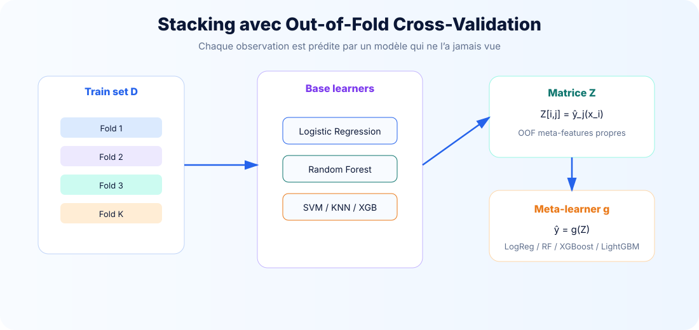

Stacking et Out-of-Fold
Architecture à deux niveaux : base learners + meta-learner, avec construction OOF pour éviter la fuite de données.
1. Définition du stacking
Le stacking est une méthode d’ensemble dans laquelle les prédictions de plusieurs modèles de base deviennent les variables d’entrée d’un second modèle appelé meta-learner. Ce meta-learner apprend comment combiner les sorties des modèles de base.

2. Architecture à deux niveaux
Niveau 0 — Base learners
Logistic Regression, SVM, KNN, Random Forest, Gradient Boosting, XGBoost, LightGBM. Ils doivent être diversifiés pour produire des erreurs différentes.
Niveau 1 — Meta-learner
Régression logistique régularisée, Random Forest, XGBoost ou LightGBM. Il apprend à combiner les prédictions.
3. Procédure Out-of-Fold
Pour chaque fold, les base learners sont entraînés sur K−1 plis et prédisent uniquement le pli laissé de côté. Chaque prédiction utilisée par le meta-learner est donc produite par un modèle qui n’a pas vu l’exemple correspondant.
for train_idx, valid_idx in skf.split(X_train, y_train):
X_tr, X_valid = X_train.iloc[train_idx], X_train.iloc[valid_idx]
y_tr = y_train.iloc[train_idx]
for j, (name, model) in enumerate(base_estimators):
estimator = clone(model)
estimator.fit(X_tr, y_tr)
Z_train[valid_idx, j] = estimator.predict_proba(X_valid)[:, 1]
4. Calibration des probabilités
Lorsque le stacking utilise predict_proba, les probabilités des base learners doivent être comparables. Un SVM mal calibré peut produire des probabilités moins fiables qu’une régression logistique. Pour les cas sensibles, on peut utiliser CalibratedClassifierCV.